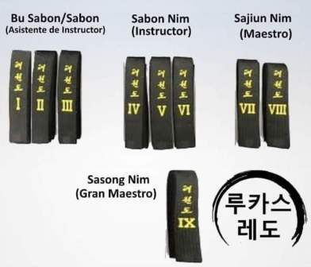

Contrariamente a lo que puede pensarse, el estudio del Taekwon-do no finalizada en el cinturón negro. Otro camino comienza a partir de ahí... Opuesto al blanco, por lo tanto significa madurez y la eficiencia del practicante.
| Danes | Denominaciones (según graduación) | Movimientos |
|---|---|---|
| I a III DAN | Bu Sabon: Asistente de instructor. |  Danes |
| IV a VI DAN | Sabon: Instructor. | |
| VII a VIII DAN | Sajiun: Maestro. | |
| IX DAN | Sasong: Gran Maestro. |
** El sufijo Nim, es un equivalente en el argot militar a "Mi" INSTRUCTOR. Por lo que no es necesario usarlo, salvo cómo muestra de respeto o afecto hacia su maestro o instructor.
| Dan | Tul / Nombre forma | Movimientos | Historia |
|---|---|---|---|
| 1º Tul de 1º Dan | Kwan-Gae | 39 movimientos | Se llama así por el famoso Kwang Gae Tohwang, el décimo noveno rey de la dinastía Kogurryo, quien recuperó los territorios perdidos incluyendo la mayor parte de Manchuria. El diagrama representa la recuperación de los territorios perdidos. Los 39 movimientos se refieren a las dos primeras cifras del año 391 D. C que fue el año en que llegó al trono. |
| 2º Tul de 1º Dan | P'o-Eun | 36 movimientos | Es el seudónimo de un leal, llamado Chong Mong Chu (1400) quien fue un famoso poeta cuyo poema "No serviré a un segundo rey aunque me crucifiquen cien veces" es conocido en todo Corea. Fue también un pionero en el campo de la física e intelectual. El diagrama representa una lealtad inquebrantable al rey y al país al final de la dinastía Koryo. |
| 3º Tul de 1º Dan | Ge-Baek | 44 movimientos | Proviene del nombre del gran general Ge-Baek de la dinastía Baek Je (660 D. C.). El diagrama representa su severa y estricta disciplina militar. |
| 1º Tul de 2º Dan | Eui-Am | 45 movimientos | Es el seudónimo de Son Byong Hi, líder del movimiento independentista Coreano del 1.º de marzo de 1919. Los 45 movimientos se refieren a la edad de cuando cambio el nombre de Dong Hak (cultura oriental), por Chondo Kyo (religión de la vida celeste). El diagrama representa el espíritu indomable que demostró dedicándose a la prosperidad de la nación. |
| 2º Tul de 2º Dan | Choong-Jang | 52 movimientos | Es el seudónimo dado al general Kim Duk Ryang quien vivió durante la dinastía Joseon en el siglo xiv. Este tul finaliza con un ataque de mano izquierda para simbolizar la tragedia de su muerte en prisión a los 27 años, sin poder alcanzar su madurez. |
| 3º Tul de 2º Dan | Juche | 45 movimientos | Es una idea filosófica según la cual el hombre es el dueño de todo. Avanza la idea de que el hombre es el dueño del mundo y de su propio destino. Se dice que esta idea surgió en el monte Paektu (la montaña más alta de Corea, 2744m), que simboliza el espíritu del pueblo coreano. El diagrama representa el monte Paektu. |
| 1º Tul de 3º Dan | Sam-Il | 33 movimientos | Evoca la fecha histórica del movimiento independentista de Corea que empezó por todo el país el 1 de marzo de 1919. Los 33 movimientos representan el número de los 33 patriotas que organizaron este movimiento. |
| 2º Tul de 3º Dan | Yoo-Sin | 68 movimientos | Proviene del general Kim Yoo-Sin, comandante general durante la dinastía silla. Los 68 movimientos evocan las dos últimas cifras del 668 d. C., año de unificación de corea. La preparatoria representa una espada desenvainada por la mano izquierda, simboliza el error de Yoo-Sin al seguir las órdenes del Rey y pelear con fuerzas extranjeras contra su propia nación. |
| 3º Tul de 3º Dan | Choi-Yong | 46 movimientos | Representa el nombre del general Choi Yong, primer ministro y comandante de las fuerzas armadas de la dinastía Koryo en el siglo xiv. Choi Yong era muy respetado por su lealtad, patriotismo y su humildad. Fue ejecutado por sus subordinados dirigidos por el general Yi Sung Gae, que llegó a ser el primer Rey de la dinastía Joseon. - Se requiere para el 3° dan. |
| 1º Tul de 4º Dan | Yon-Gae | 49 movimientos | Proviene del nombre del famoso general de la dinastía Koguryo Yon Gae Somoon. Los 49 movimientos se refieren a las dos primeras cifras del año 649 cuando obligó a la dinastía Tang a abandonar Corea, matando casi 300.000 chinos en Ansi Sung. |
| 2º Tul de 4º Dan | Ul-Ji | 42 movimientos | Proviene del nombre del general UL JI Moon Dok, que defendió Corea con valentía contra la invasión China de los Tang con un ejército de casi un millón de soldados y dirigidos por Yang Je en el año 612. Ul-Ji utiliza tácticas de disuasión y guerrilla, diezmando largamente las fuerzas enemigas. El diagrama evoca su sobrenombre. Los 42 movimientos representa la edad del autor cuando creó este tul. |
| 3º Tul de 4º Dan | Moon-Moo | 61 movimientos | Honor por el 30 Rey de la dinastía Silla. Su cuerpo fue enterrado cerca de Dae Wang Am (roca del Gran Rey). Según su voluntad puso el cuerpo en el mar donde mi alma defenderá para siempre mi país contra los invasores, Se dice que Sok Gul Am (cueva) fue construido para guardar su tumba. El Sok Gul Am es un buen ejemplo de la cultura de la dinastía Silla. Los 61 movimientos de este tul simbolizan las dos últimas cifras del año 661, cuando Moon-Moo subió al trono. |
| 1º Tul de 5º Dan | So-San | 72 movimientos | Es el seudónimo del celebre monje Choi Hyongh Ung (1520-1604) durante la dinastía Joseon. Los 72 movimientos se refieren a su edad cuando organizó un cuerpo de monjes soldados con al ayuda de Sa Myung Dang. Esos monjes soldados ayudaron a expulsar los piratas japoneses que controlaban la mayor parte de la península en 1592. |
| 2º Tul de 5º Dan | Sejong | 24 movimientos | Proviene del nombre del más grande de los reyes coreanos, Se Jong quien invento el alfabeto coreano en 1443, y quien era, también un meteorólogo famoso. El diagrama significa REY mientras que los 24 movimientos se refieren a las 24 letras del alfabeto Coreano. |
| 6º Dan | Tong-Il | 56 movimientos | Denota la resolución de reunificar a Corea, dividida desde 1945. El diagrama simboliza la homogeneidad de la raza. |